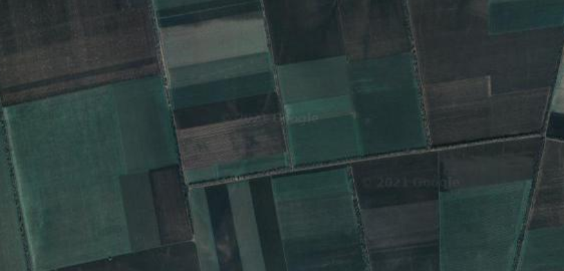
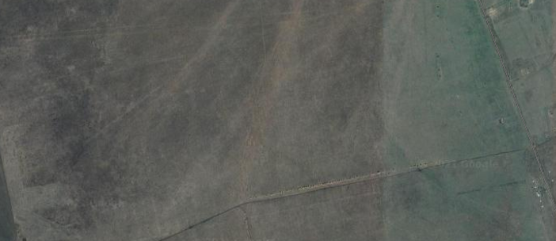
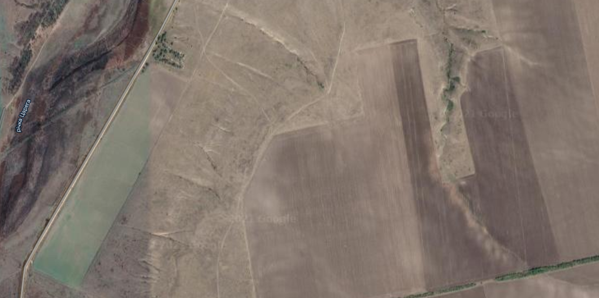
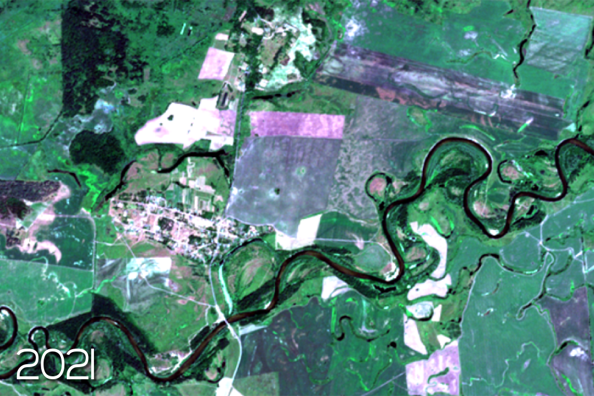
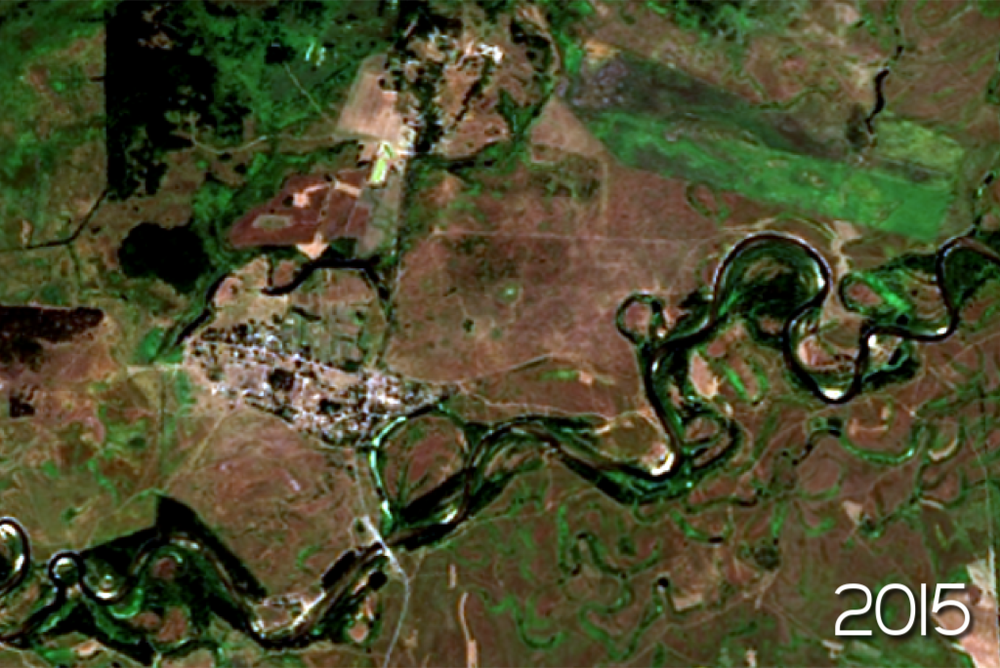

В Україні близько 6% земель займають території Природно-заповідного фонду (далі ПЗФ). Це удвічі більше, ніж за радянських часів, але все ще менше, ніж в країнах Європи, де середній показник складає 21%. Водночас недоторкані або майже недоторкані природні території займають лічені відсотки площі.
В залежності від типу, на заповідній території може бути частково або повністю обмежена людська діяльність.
Наприклад, статус Біосферного заповідника або Памʼятки природи передбачає суворіші обмеження, в той час як в межах, наприклад, Регіональних ландшафтних парків може проводитись господарська діяльність.
Проте якщо подивитись на території ПЗФ на космічних знімках або за допомогою сервісів на кшталт Google Earth можна помітити, що чимала їх площа також зайнята ріллею.
Розорані території на знімках виглядають ось так:

Недоторкані території ось так:

Оранки всередині недоторканих територій добре видно на супутникових знімках. Розорані ділянки мають чіткі межі, часто помітні сліди-полоси від техніки, як на скріні нижче.

Оранки у ПЗФ можна поділити на законні і незаконні. Незаконими є оранки на схилах, у долинах річок, на луках, а також самовільні оранки. Землі заповідного фонду — ласий шматок, адже в Україні не так багато вільної землі, а ось авантюристів, що сподіваються непомітно для правоохоронних органів розорати, посадити і зібрати врожай, вистачає. Часто це відбувається з дозволу або мовчазної згоди представників місцевої влади.
Окрім самовільно розораних земель, останнім часом ділянки з території ПЗФ почали виставляти на торги. Так у червні Громадська організація “Українська Природоохоронна Група” (UNCG) виявила на земельних торгах ділянки, що відносяться до Національного природного парку “Меотида” (Донецька область), та інших заповідних територій.
Виявлення незаконних оранок чи земель “на продаж” в межах ПЗФ - кропітка ручна робота і передбачає пошук та ідентифікацію розораної землі в межах ПЗФ на космічних знімках, у геокадастрі, а також встановлення законності кожного знайденого випадку.
В Україні таким моніторингом активно займається UNCG. Наприклад, вони встановили межі незаконих оранок в межах Дніпропетровської області.
Ми додали до карти полігони знайдених ними ділянок “на продаж”. В результаті на інтерактивній карті нижче, на прикладі Дніпропетровської області, ви можете побачити, як часто порушується недоторканість територій ПЗФ.
Стан об'єктів ПЗФ на прикладі Дніпропетровщини
Для створення карти використані дослідження "Українська природоохоронна спілка".
Затисніть клавішу CNTR для зуму
Новини про розорані землі природно-заповідного фонду рідко досягають широкого загалу. Українці схильні турбуватись про сьогодення, а не збереження природи для майбутніх поколінь.
Приклади масштабного розорювання ПЗФ
Ландшафтний заказник “Тарутинський степ” (Одеська область)
“Тарутинський степ” — другий найбільший після “Асканії-Нови” шмат природних степових екосистем в Європі. Заказник є місцем поширення тварин та рослин, що охороняються відповідно до четвертої та шостої Резолюції Конвенції про охорону дикої флори та фауни і природних середовищ існування в Європі (Бернська конвенція) 1979 р.
У 2016 році було розорано понад 1300 га території Тарутинського степу. Тоді Міністерство оборони намагалось домогтися скасування рішення про створення заказника.
Регіональний ландшафтний парк «Сеймський» (Сумська область)
РЛП «Сеймський» — найбільша за площею в Сумській області природо-заповідна територія, в яку увійшло більше 10 інших заказників, заповідників та памʼяток природи. У 2019 році активісти повідомляли про розорення 13 ділянок в заплаві р. Сейм, особливо поблизу с. Озаричі.


Національний природний парк «Тузлівські лимани», Ботанічний заказник «Цілинна ділянка Могили», Ландшафтний заказник «Вигін Чабанка», Ландшафтний заказник «Гирло р. Корсак», Ботанічний заказник місцевого значення «Тулинецькі переліски», Луганський природний заповідник "Стрільцівський степ", Ботанічна пам'ятка природи «Велика Долина», Ландшафтний заказник «Яришівська гора», Регіональний ландшафтний парк «Тилігульский» — щомісяця активісти фіксують розорення, вирубки та інші пошкодження на заповідних територіях.
Деякі з них менших масштабів і їх важко розпізнати на космічних знімках, тому для фіксації протизаконної діяльності необхідно виїздити на місце і робити фото- і відеозйомку.
Наразі ситуація з оранками на територіях ПЗФ потребує куди більшої уваги з боку громадських організації, екологічних організацій, місцевих і центральних органів влади, а також правоохоронних органів.
Для покращення ситуацію потрібно спростити процес виявлення порушень. Наприклад, цього року Міндовкілля опублікувало дані більшості обʼєктів ПЗФ у форматі геопросторових даних. До цього в Україні їх не було.
Активісти або окремі органи місцевої влади збирали дані відносно меж обʼєктів ПЗФ в деяких областях (наприклад, Тернопільська або Вінницька), а карта на сайті геокадастру мала невичерпний перелік обʼєктів без можливості їх завантаження.
І хоча дані Міндовкілля попередні і потребують серйозних коригувань, сам факт створення і оприлюднення геопросторових даних з полігонами обʼєктів ПЗФ — великий крок до розширення і автоматизації моніторингу стану обʼєктів ПЗФ і, відповідно, посилення роботи по їх збереженню.
Також відкриті дані геокадастру у машиночитабельному форматі суттєво полегшили б виявлення самовільно захоплених ділянок. Проте на сьогодні ми маємо закритий геокадастр. Подивитись на сайті можна лише конкретну ділянку, без можливості пошуку і відображення ділянок за параметрами, а також завантаження даних геокадастру у програми ГІС для подальшого автоматичного аналізу.
Законодавчі зміни
Відповідно до ст. 9 ЗУ “Про природно-заповідний фонд України”, території ПЗФ можуть використовуватися:
- у природоохоронних цілях;
- у науково-дослідних цілях;
- в оздоровчих та інших рекреаційних цілях;
- в освітньо-виховних цілях;
- для потреб моніторингу навколишнього природного середовища.
Вище ми описали ситуації, коли обʼєкти ПЗФ були самовільно розорані. Проте у багатьох випадках обʼєкт створювали на вже розораних, часто ще за часів СРСР, землях.
Якщо створення Національного природного парку, Ботанічного саду передбачає вилучення відповідної території з господарського використання, то наприклад, Регіональний ландшафтний парк, відповідно до ст.23 вищезазначеного закону, можуть створюватись з або без вилучення, а землі на території Заказників не вилучаються у їхніх власників.
Таким чином, створення заповідної території, не завжди передбачає вилучення землі у власника. Водночас власність на землю, що знаходиться в межах ПЗФ, означає, що власник має дотримуватись відновідного законодавства по збереженню, а не розпоряджатись нею на власний розсуд.
Висока частка розораних земель на територіях ПЗФ потребує широкої дискусії і, можливо, перегляду відповідного законодавства. Адже деякі заповідні території існують лише на папері, і хоча наявність оранок не суперечить, наприклад, положенню про створення обʼєкта і є юридично законною, фактично це жодним чином не сприяє збереженню природи.
За даними 2017 року в Україні розорано 53.6% земель. Це найвищий показник в Європі.
Для прикладу візьмемо Регіональний ландшафтний парк “Дністровський каньйон”. Він був створений рішенням Тернопільської обласної ради у 1990 році, щоб стати основою створення в майбутньому Національного парку. Рішення про створення Національного парку дійсно було прийнято у 2010 році.
Відповідно до Положення на території РЛП дозволена господарська діяльність, а зонування парку передбачало пʼять зон:
- для масового відпочинку;
- для обмеженого відпочинку;
- непорушеного природного ландшафту;
- туристичної;
- експлуатаційної.
Положення не містить карти з чітко визначеним зонуванням, лише на словах загально прописані межі. Однак майже всі землі РЛП, що не входять до складу Національного парку, розорані. І більшість з них вже була розорана на момент створення парку. Таким чином, сам факт створення РЛП майже не вплинув на стан території.
Тож можливо треба переглянути законодавство про ПЗФ, і ті обʼєкти, що потребують охорони і збереження вилучати/викупляти у власників/забороняти господарську діяльність і намагатись відновити ланшафти, флору і фауну обʼєктів заповідного фонду.